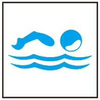
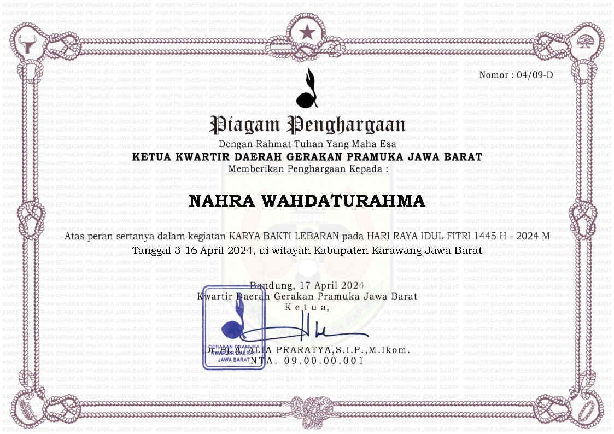

Pencapaian SKU/TKU
Pencapaian Penegak Bantara
Berikut ini adalah Proses pencapaian SKU tingkat Bantara


Pencapaian SKK/TKK
Dokumentasi pencapaian bidang-bidang TKK
Bidang agama, mental, moral, spiritual, pembentukan pribadi dan watak
TKK SHOLAT
Untuk mendapatkan TKK,Saya mengetahui:
Bagaimana cara Bertayamum
Syarat-Syarat,Rukun,dan yang membatalkan sholat
Bidang patriotisme dan seni budaya
TKK PENGATUR MEJA MAKAN

Untuk mendapatkan TKK saya dapat menyiapkan tempat dan menghidangkan makanan
TKK PENGATUR RUMAH
Untuk Mendapatkan TKK,Saya dapat:
Mengatur Posisi Sofa,mendekorasi dan menghias Ruang Tamu Saya
TKK DRIGEN

Untuk mendapatkan TKK,saya dapat membaca not angka dan tahu tanda-tanda serta istilah not angka, bisa menyanyikan dua buah lagu nasional/daerah dan dua buah lagu pramuka.
Bidang ketangkasan dan kesehatan
TKK GERAK JALAN

Untuk mendapatkan TKK,Saya mengerti untuk sikap berdiri,berjalan mengerti cara mencegah dan merawat lepuh di kaki,cara beristirahat selama dan sesudah gerak jalan.
TKK PENGAMAT

Untuk mendapatkan TKK,Saya dapat:
mengingat 8 dari 10 macam benda yang dilihatnya dalam 1 menit
TKK PERENANG

Untuk mendapatkan TKK,Saya dapat berenang gaya punggung dan gaya bebas sejauh 30 meter
terjun dengan baik dari tepi kolam renang menyelam dalam air
TKK PENDAYUNG

Untuk mendapatkan TKK,Saya dapat berenang dan menggunakan pelampung,mengemudikan perahu,memahai setiap gerak dari mulai perahu di darat sampai berada di air.s
Bidang keterampilan dan teknik pembangunan
TKK PETERNAK KELINCI

Untuk mendapatkan TKK,Saya memelihara 2 ekor kelinci 1 jantan dan 1 betina,dan dikembangkan sampai mempunyai angka
TKK PETERNAK AYAM

Untuk mendapatkan TKK saya dapat memelihara ayam sebanyak 15 ekor,memberi makan ayam,bisa membedakan ayam sehat dan ayam sakit
TKK JURU KEBUN

Untuk mendapatkan TKK Saya dapat merawat,mengenal macam-macam hama dan penyakit tanaman dan tahu cara pencegahan memelihara Tanaman dan dapat mempergunakan pupuk kompos
TKK JURU MASAK
Untuk mendapatkan TKK saya dapat menyalakan api dengan baik
pernah membantu masak di perkemahan
Tahu cara dan dapat mengawetkan satu jenis makanan/bahan makanan
Dapat menyusun menu beserta bahan-bahan keperluannya,mengetahui nilai gizi beberapa jenis bahan makananp
Mengetahui cara dan dapat mengawetkan agar tahan selama 1 minggu.
TKK JURU POTRET

Untuk Mendapatkan TKK Saya dapat menggunakan fotografi,membuat dokumentasi kegiatan dengan menggunakan Kamera Digital dan Kamera Handphone
Bidang sosial, perikemanusiaan, gotong-royong, ketertiban masyarakat, perdamaian dunia dan lingkngan hidup
TKK PENGAMAN LALU LINTAS

Dapat memberi penjelasan kepada teman di ambalan tentang peraturan lalu-lintas yang berlaku bagi pengemudi-pengemudi kendaraan bermotor,dan yang berlaku
Dapat menjelaskan asas-asas disiplin dan kesopanan lalu lintas
TKK P.P.P.K

Dapat mengetahui dan dap[at menolong kecelakaan luka iris,luka garuk,luka bakar/kena benda panas,memar,terkilir
Dapat membuat tandu darurat dengan cepat dan rapi dan tahu serta dapat mengangkut penderita dengan berbagai cara secara seorang diri maupun bersama dengan teman.
TKK PENERIMA TAMU

Dapat dan tahu cara menerima,duduk,berbicara,memperkenalkan dan mengantar tamu dapat mengatur tempat dan meja tamu,memilih,menyusun,dan mengatur makanan dan minuman untuk tamu.
Keikutsertaan Kegiatan
Kegiatan PAM Lebaran/Karya Bakti Pramuka
Kegiatan ini dilaksanakan pada saat menjalankan hari raya idul fitri,kami disini bersama sama ikut membantu mengatur arus mudik dan menjaga dan mangatur lalu lintas,dengan maksud untuk mengurangi angka kecelakaan lalu-lintas untuk para pemudik yang menggunakan sepeda motor


Kegiatan SAKA Wira Kartika
Kegiatan Apel Besar ini dilaksanakan ketika HUT Pramuka ke 62,dilaksanakan se-jawabarat di stadion wibawamukti
Dilanjut Kegiatan Tapak Krida Saka Wirakartika KORAMIL 0404/rdk selama 3 hari 2 malam

Kegiatan Lintas Medan V 2024
Kegiatan Lintas Medan v ini dilakukan selama 1 hari 2 malam dengan beberapa mata perlombaan

Kegiatan Latihan Gabungan Penegak Kwaran Rengadengklok
Kegiatan latihan gabungan ini dilaksanakan selama 1 hari 2 malam untuk meningkatkan kualitas dan aktivitas pramuka penegak di wilayah Rengasdengklok
Meningkatkan rasa persaudaraan,menggalang persatuan,menambah pengalaman dan pengetahuan serta meningkatkan rasa patriotisme.

Kegiatan Gema Ramadhan
Kegiatan Gema ramadhan ini dilaksanakan oleh DKC Karawang dengan di bagi beberapa zona,Kegiatan Gema Ramadhan yang saya ikuti berada di zona 4 yang bertempat di SMAN I RAWAMERTA

Project Produktif
Pada Project ini saya membuat tanaman tauge dengan media tanam Hidroponik
Bahan-Bahan yang dipergunakan adalah wadah,Bibit Tauge (kacang hijau),Kapas,Air
Proses Pemeliharaan Tanaman Hidroponik
Pastikan Air Selalu dalam kondisi bersih dengan melakukan pergantian selama 4 hari sekali,kemudian ukur pH dalam air menggunakan strip meter, pH air yang baik untuk hidroponik adalah berkisar 5,5 dan 6,5
Cek Tanaman Secara Berkala
Dengan Mengecek Tanaman secara berkala, Teman-teman dapat mengetahui apa yang sedang terjadi pada tanaman.
Bersihkan wadah media tanam secara berkala
Wadah media tanam cenderung rentan ditumbuhi lumut, kalau sudah terjadi hal ini bersihan wadah media tanam agar tidak berpengaruh pada tanaman
Tanaman Hidroponik